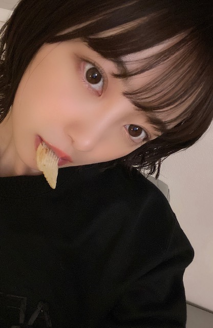
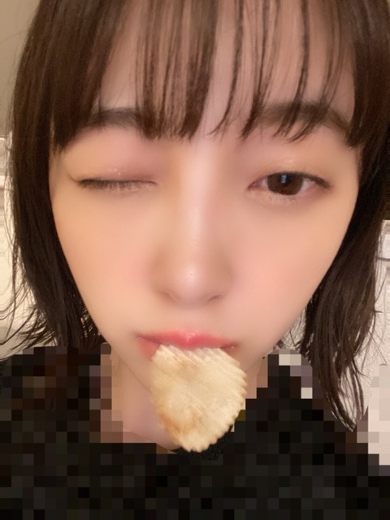
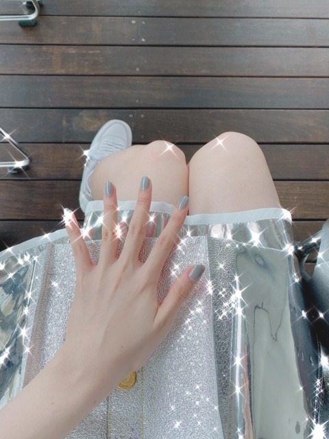

2020/0729Wed夏の星座がみたい
こんばんは！
なんかちょっとかなしげな顔
夏の星座ってなにがありますか？
地元ではホタルがたくさんいて
綺麗だったなぁ
またたくさんのホタルを見たいです
2nd写真集公式Twitter
で突然ですが
堀未央奈が彼女だったら
連載はじめました〜
写真集の裏テーマが彼女感なので
彼氏目線の動画を自作自演で
あげていこうと思います
どんなのがみたいですか？
教えてください^ - ^


※服に犬の毛が付きすぎてたのでモザイクしました
今日はポテチが出てきてるよ〜
みてね〜
ps.
真夏さんちゃっかりわたしの
ブログみてるのカワイイ^ - ^
なめてるでしょ！とかいつも
言ってくるけど今日もずっと
隣でニコニコゲラゲラ
たのしそうでした^ - ^笑
わたしのこと好きやなあ^ - ^

では！
2020/07/29 21:06
コメント(301)
こんばんは
写真は可愛すぎる！大好き！
写真は可愛すぎる！大好き！
未央奈ー！ブログありがとう〜！！(｡･ω･｡)
夏の星座は、有名な夏の大三角を成してる、はくちょう座、わし座、こと座、があって、デネブ、アルタイル、ベガ、って星を線で結んで夏の大三角って言ってるの！
他には、こぐま座、カシオペヤ、かんむり座、いて座、さそり座、とかとか沢山あるよ！！！
真夏さんと仲良いのめっちゃ嬉しい！！！
大昔に私が真夏さんとお話して、その時の事を未央奈に言ってくれてた事があって、その当時から仲の良さが伝わってきて今も仲良いのが本当に嬉しい！！！(,,•﹏•,,)
彼氏目線の動画や写真めっちゃ楽しい！まだまだ沢山見られることを楽しみにしてる〜！
悲しげな顔というより、可愛い！！！笑
【彼氏目線動画】
｢彼氏を看病する動画｣（おでことおでこで熱を測る感じの）
｢壁ドン｣（壁ドンをされてる感じで）
もっと思いついたらコメントするね！
夏の星座は、有名な夏の大三角を成してる、はくちょう座、わし座、こと座、があって、デネブ、アルタイル、ベガ、って星を線で結んで夏の大三角って言ってるの！
他には、こぐま座、カシオペヤ、かんむり座、いて座、さそり座、とかとか沢山あるよ！！！
真夏さんと仲良いのめっちゃ嬉しい！！！
大昔に私が真夏さんとお話して、その時の事を未央奈に言ってくれてた事があって、その当時から仲の良さが伝わってきて今も仲良いのが本当に嬉しい！！！(,,•﹏•,,)
彼氏目線の動画や写真めっちゃ楽しい！まだまだ沢山見られることを楽しみにしてる〜！
悲しげな顔というより、可愛い！！！笑
【彼氏目線動画】
｢彼氏を看病する動画｣（おでことおでこで熱を測る感じの）
｢壁ドン｣（壁ドンをされてる感じで）
もっと思いついたらコメントするね！
ブログ更新ありがとう！
Twitter見たよ！
ツンデレな未央奈ちゃんがみたいな〜
Twitter見たよ！
ツンデレな未央奈ちゃんがみたいな〜
明日の晩酌はポテトチップス 略して❗ポテチ (*´∀｀)何味にしようかな おっちゃんは冒険しない。塩、コンソメ、海苔 たまに、小池屋のガ〜リック
猫ちゃんとか何かに焼き餅している未央奈がみたい
ブログ更新ありがとう！！！！！！
未央奈見てるとすごく元気になる！！！
これからも乃木坂頑張って！！！！！！
未央奈見てるとすごく元気になる！！！
これからも乃木坂頑張って！！！！！！
ブログの更新速度早くて嬉しいです！！
夏の星座って言ったら北斗七星とか夏の大三角形とかじゃないですか！
堀ちゃんほんとにブログいっぱい更新してくれるから嬉しいです！
堀ちゃんほんとにブログいっぱい更新してくれるから嬉しいです！
マジカワイイ。蛍メッッチャ好き。イイヨネ。
更新ありがとう。
更新ありがとう。
髪の毛結ぶところとかみたい！
更新ありがとう〜モグモグ未央奈の、彼女目線？が見たいです
ブログ更新ありがとうございます。
夏の星座は夏の大三角しか思いつきません。調べてみたらはくちょう座、わし座、こと座、さそり座、射手座などがあるみたいです。最近は曇ってばかりで星もなかなか見れないですね。
今日渋谷TSUTAYAに堀さんのパネル展見に行きました！可愛くて美しい堀さんがたくさんでした。
僕もポテチ食べたい。
素敵な写真ありがとうございます。
夏の星座は夏の大三角しか思いつきません。調べてみたらはくちょう座、わし座、こと座、さそり座、射手座などがあるみたいです。最近は曇ってばかりで星もなかなか見れないですね。
今日渋谷TSUTAYAに堀さんのパネル展見に行きました！可愛くて美しい堀さんがたくさんでした。
僕もポテチ食べたい。
素敵な写真ありがとうございます。
動画凄い可愛いかったです
ブログ更新ありがとう♡
夏の星座はこと座、わし座、さそり座、はくちょう座だそうです。
彼氏に甘えた雰囲気のシュチュエーションしてほしいです。
夏の星座はこと座、わし座、さそり座、はくちょう座だそうです。
彼氏に甘えた雰囲気のシュチュエーションしてほしいです。
夏の星座はデネブ、アルタイル、ベガとかかな？
公式Twitter更新してくれてありがと！楽しませてもらってるよ
公式Twitter更新してくれてありがと！楽しませてもらってるよ
「今日の服、どっちがいいかな？決めて〜？」みたいな。
すねた未央奈とか、甘える未央奈とか。
すねた未央奈とか、甘える未央奈とか。
みおながんばれ！
初めてコメントするよ。
いつもかわいいよ。
応援してる。
755も見てる。
いつもかわいいよ。
応援してる。
755も見てる。
ブログ更新ありがとう！
Twitter必ず見ます！！
動画楽しみにしてるね！
連載楽しみや〜
Twitter必ず見ます！！
動画楽しみにしてるね！
連載楽しみや〜
未央奈ちゃんこんばんは！ブログありがとう！
写真がどれも可愛いすぎる！
あとまなったんと仲良しで微笑ましい笑
応援してるよ
写真がどれも可愛いすぎる！
あとまなったんと仲良しで微笑ましい笑
応援してるよ
未央奈ちゃんブログ更新ありがとう！
写真集公式Twitterの動画がめっちゃ可愛すぎてあまりスマホの画面見れなかった笑 ポテチを食べさせてもらいたいなって心の中で密かに思ってました((ﾎﾞｿｯ…(ヤバいやつですね笑)
夏の星と言ったら、夏の大三角形しか分からない笑
じゃ、またブログ更新した時に！
(*￣▽￣)ﾉ~~ ﾏﾀﾈｰ♪
写真集公式Twitterの動画がめっちゃ可愛すぎてあまりスマホの画面見れなかった笑 ポテチを食べさせてもらいたいなって心の中で密かに思ってました((ﾎﾞｿｯ…(ヤバいやつですね笑)
夏の星と言ったら、夏の大三角形しか分からない笑
じゃ、またブログ更新した時に！
(*￣▽￣)ﾉ~~ ﾏﾀﾈｰ♪
ブログ更新ありがとうございます！
夏の星座はこと座、天秤座、和紙座、白鳥座、蠍座
射手座、竜座、蛇使い座なとがあります！
七夕の「おりひめ」と「ひこぼし」にあたること座の
ベガと和紙座のアルタイル、そして白鳥座のデネブは
天の川を空高くまたぐ「夏の大三角」として夏の夜を
すずやかに彩ってくれるみたいですよ！
あらかじめ語られるロマンス思い出します
Twitter絶対に見ます
夏の星座はこと座、天秤座、和紙座、白鳥座、蠍座
射手座、竜座、蛇使い座なとがあります！
七夕の「おりひめ」と「ひこぼし」にあたること座の
ベガと和紙座のアルタイル、そして白鳥座のデネブは
天の川を空高くまたぐ「夏の大三角」として夏の夜を
すずやかに彩ってくれるみたいですよ！
あらかじめ語られるロマンス思い出します
Twitter絶対に見ます
ブログ更新ありがとうございます。
ポテチの動画かわいくて最高でした。
ちょっと拗ねてる感じの動画とか見たいです。
ポテチの動画かわいくて最高でした。
ちょっと拗ねてる感じの動画とか見たいです。
未央奈さんこんばんは！
今日もやっぱり美しいです。
美しさが詰まってて、とても惹き込まれます。
夏の星座といえば、夏の大三角形ですよ。
空を見上げて、明るい点を3つ結んだらできます。
東京は明るいのでもしかしたら見えにくいかもしれないですけど。
未央奈さんが彼女だったらシリーズ楽しみますね!!
今日もやっぱり美しいです。
美しさが詰まってて、とても惹き込まれます。
夏の星座といえば、夏の大三角形ですよ。
空を見上げて、明るい点を3つ結んだらできます。
東京は明るいのでもしかしたら見えにくいかもしれないですけど。
未央奈さんが彼女だったらシリーズ楽しみますね!!
ブログ更新ありがとうございます。
僕は夏の星座は夏の大三角形しかわかりません。
Twitter見てます！彼氏目線で見れる、かわいい未央奈さんの動画を見ていつも元気をもらってます。ありがとうございます。
僕は夏の星座は夏の大三角形しかわかりません。
Twitter見てます！彼氏目線で見れる、かわいい未央奈さんの動画を見ていつも元気をもらってます。ありがとうございます。
真夏と未央奈のやりとり微笑ましくて自然と口角上がる(´˘`＊)
熱中症とコロナにはよう気を付けてなっ！！
ブログ更新ありがとう！
新しい企画が始まってうれしいよ〜
癒しです笑
星座はあんまり知らないけど夏の大三角形が見れたらいいなぁと思ってる(^^)
新しい企画が始まってうれしいよ〜
癒しです笑
星座はあんまり知らないけど夏の大三角形が見れたらいいなぁと思ってる(^^)
こんばんは。ブログ更新ありがとうございます。
私は人生で一度も蛍を見たことが無いです。私は千葉県人なのですが、千葉県内で蛍が見られるところってあるかな？
彼女感かー。私が最初に付き合った、中学生の時の彼女とは手も握れなかったので、手をつないで歩いている学生カップルを見ていると、その事を思い出します。
ではまた。
私は人生で一度も蛍を見たことが無いです。私は千葉県人なのですが、千葉県内で蛍が見られるところってあるかな？
彼女感かー。私が最初に付き合った、中学生の時の彼女とは手も握れなかったので、手をつないで歩いている学生カップルを見ていると、その事を思い出します。
ではまた。
仕事頑張った後の癒やしの一言とか寝る前のおやすみとかあげてほしい
ポテチめちゃ可愛い ポッキーも見てみたいかもー！
突然始まった動画企画、「写真集のテーマが彼氏目線だったよなぁ」なんてぼんやり考えていたら本当にそうでびっくり。
明日以降も楽しみ！
あまりイメージないので、デレッデレに甘える未央奈とか見てみたい。笑
あ、Twitterでもタグつけて呟いたけど、パネル展も大阪と名古屋の2箇所にお邪魔してきたよ！（何故かまだ東京には行けてない）
明日以降も楽しみ！
あまりイメージないので、デレッデレに甘える未央奈とか見てみたい。笑
あ、Twitterでもタグつけて呟いたけど、パネル展も大阪と名古屋の2箇所にお邪魔してきたよ！（何故かまだ東京には行けてない）
未央奈ブログ更新ありがと！
夏の星座は王道は夏の大三角形で
他にヘラクレス座とか色々ある！
リクエストはー夏だし花火行ってる時の写真とかがいい！
まなったんと仲良さそうで何より
またブログ更新待ってるね！
夏の星座は王道は夏の大三角形で
他にヘラクレス座とか色々ある！
リクエストはー夏だし花火行ってる時の写真とかがいい！
まなったんと仲良さそうで何より
またブログ更新待ってるね！
いろんな角度から撮ったROUTE246の衣装が見たいです！
最後の写真は衣装？私服？
最後の写真は衣装？私服？
彼氏目線の投稿、毎日心待ちにしてます！！
真夏と何話してたか気になる〜〜！！
よければ少し教えてくださーい笑
よければ少し教えてくださーい笑
ブログ更新ありがとう
未央奈ちゃん可愛い
彼女感めちゃくちゃでてて好き、一緒にどっかに行く系のやつやって欲しいなー
未央奈ちゃん可愛い
彼女感めちゃくちゃでてて好き、一緒にどっかに行く系のやつやって欲しいなー
蛍って‥‥、実物は見たことないかも。
ポテトチップスが食べたくなってきました。
ポテトチップスが食べたくなってきました。
堀未央奈❤こんばんは 夏の星座は、見たことないから分からないよ(T_T)
悲しい事あったのかな？俺の携帯じゃ見れないからどんなのがいいか分からないよ(T_T)
真夏は、未央奈のブログ読んでるんだね(^-^)v
今日も可愛いね(*^^*)未央奈の手と脚綺麗だね(*^^*)
これからも体調に気を付けて頑張ってね(^_^)v応援しているからね(*^^*)
今日も愛してる❤
悲しい事あったのかな？俺の携帯じゃ見れないからどんなのがいいか分からないよ(T_T)
真夏は、未央奈のブログ読んでるんだね(^-^)v
今日も可愛いね(*^^*)未央奈の手と脚綺麗だね(*^^*)
これからも体調に気を付けて頑張ってね(^_^)v応援しているからね(*^^*)
今日も愛してる❤
みおな☆★☆タンポポだけども～♪♪♪
( 〃▽〃)
いや、Twitterと755を見て心臓が恋を
しましたーーーーーーーーー！！！！！！！
てか、可愛すぎる！！！！！！！
みおなのこと限界MAXに好きすぎると
思ってたのに！！
のにーーーーーーーーー！！！！！！！
更に……恋、しまひた。( 〃▽〃)愛
ヤバすぎるあんな可愛い子そばにおったら
それだけで俺は何でも出来る！！！！！！！
みおな～（ ＴДＴ）可愛すぎるよ～♪♪♪
好きだーーーーーーーーー！！！！！！！
『みおなはタンポポの人生のキキだよ！！タンポポはジジだよ！！』
みおなは猫アレルギーなんだけどさ……
(*≧∀≦*)可愛いすぎたーーーーーーーーー！
ああ……俺ダイエット宣言普段からしてる
からまじシンクロ感幸せすぎた笑( 〃▽〃)愛
タンポポより
みおなちゃん！
彼氏目線の動画めっちゃかわいい！！
女子でもドキドキしちゃう！笑
ネイルかわいー！！
その色いいねー！
彼氏目線の動画めっちゃかわいい！！
女子でもドキドキしちゃう！笑
ネイルかわいー！！
その色いいねー！
まぁ、夏の星座って言ったら、夏の大三角ですよね。アルタイル、ベガ、デネブ。
公園とか遊園地で一緒にデートしてる風の動画お願いします♪( 〃▽〃)
未央奈ちゃん♪ブログの更新ありがとうね♪凄く嬉しいよ♪ブログの写真凄く可愛い～♪ちょっとかなしげな顔も凄く可愛いよ！自分は夏の星座って言えば小学生の頃に授業でプラネタリウムに行って教えてもらって思い出に残ってる「夏の大三角」の「こと座」「はくちょう座」「わし座」かな(*^^*)
Twitpicの動画みてるよ！今日のポテチの動画めちゃくちゃ可愛いくてずっとニコニコしながら癒されてたよ(#^.^#)
堀未央奈が彼女だったら連載凄く嬉しいよ！こんなに可愛い未央奈ちゃんが彼女だったらどんなに幸せかって思いながらずっと嬉しくて何回も観てるよ♪
観てみたいのは、「仕事から帰ってきた時に未央奈ちゃんからお帰りなさいとかお疲れ様って言われてみたいです」
まなったんと未央奈ちゃんのコンビ凄く面白くて大好きだよ♪まなったんは本当に未央奈ちゃんの事大好きだね♪
また、ブログの更新楽しみにしてるね♪未央奈ちゃん大好きだよ♪では！
堀 未央奈神推し秀喜より！(≧∇≦)
Twitpicの動画みてるよ！今日のポテチの動画めちゃくちゃ可愛いくてずっとニコニコしながら癒されてたよ(#^.^#)
堀未央奈が彼女だったら連載凄く嬉しいよ！こんなに可愛い未央奈ちゃんが彼女だったらどんなに幸せかって思いながらずっと嬉しくて何回も観てるよ♪
観てみたいのは、「仕事から帰ってきた時に未央奈ちゃんからお帰りなさいとかお疲れ様って言われてみたいです」
まなったんと未央奈ちゃんのコンビ凄く面白くて大好きだよ♪まなったんは本当に未央奈ちゃんの事大好きだね♪
また、ブログの更新楽しみにしてるね♪未央奈ちゃん大好きだよ♪では！
堀 未央奈神推し秀喜より！(≧∇≦)
未央奈ちゃんが彼女だったらと考えると毎日最高だろうなー笑
頑張ってください応援してます
頑張ってください応援してます
ブログ更新ありがとうございます
未央奈さんのTwitter楽しみにしてます
未央奈さんの笑顔を見ることが生きがいです！！
未央奈さんのTwitter楽しみにしてます
未央奈さんの笑顔を見ることが生きがいです！！
可愛い！
未央奈ちゃんブログ更新ありがとうっ！
私の家の近くにも蛍飛んでる！
すごく綺麗✨
星空すごく好きで、空見上げたりするんですけど最近天気悪くてあんまり星が見えなくて...私も夏の星座が見たいです！
お天気良くなるといいですよね。
またブログ更新楽しみにしてます！！
私の家の近くにも蛍飛んでる！
すごく綺麗✨
星空すごく好きで、空見上げたりするんですけど最近天気悪くてあんまり星が見えなくて...私も夏の星座が見たいです！
お天気良くなるといいですよね。
またブログ更新楽しみにしてます！！
夏の星座だと夏の大三角(わし座、こと座、白鳥座)が思いつきますね
公式Twitterの連載は最高です
真夏さんとの絡みはほっこりします
メンバーとのエピソードは乃木坂の良い雰囲気が伝わってきて嬉しいです
そういえば林瑠奈ちゃんがブログで未央奈さんのことが好きすぎるって載せてましたね
公式Twitterの連載は最高です
真夏さんとの絡みはほっこりします
メンバーとのエピソードは乃木坂の良い雰囲気が伝わってきて嬉しいです
そういえば林瑠奈ちゃんがブログで未央奈さんのことが好きすぎるって載せてましたね


次回も楽しみにしています！